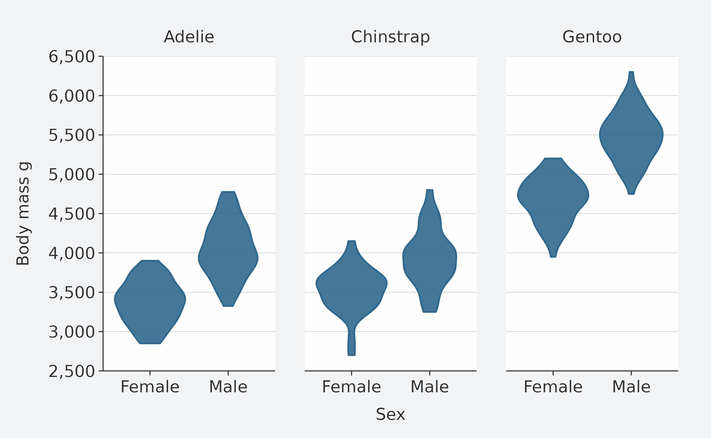
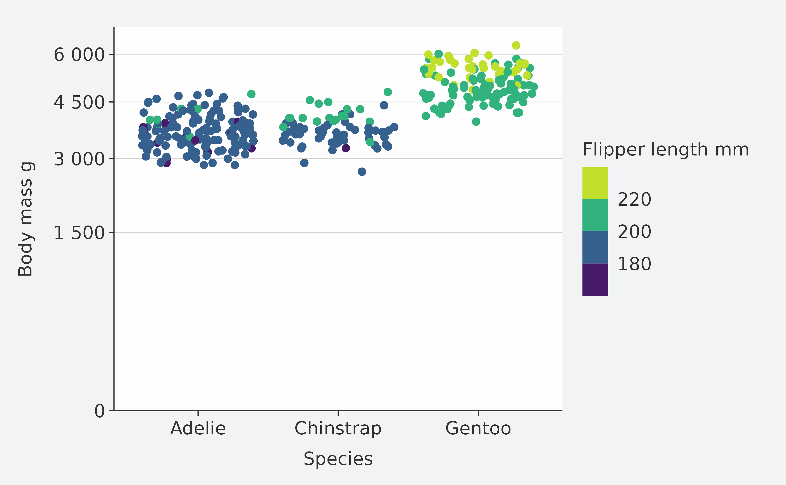
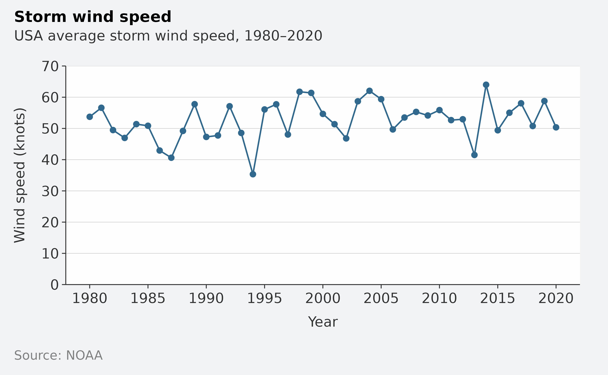
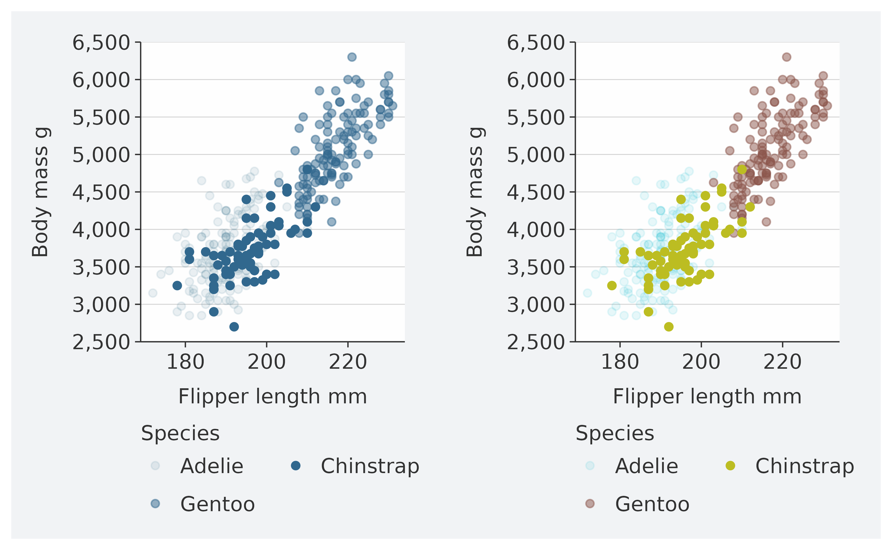

Overview
ggblanket is a package of wrapper functions around the fantastic ggplot2 package.
The primary objective is to simplify ggplot2 visualisation.
Secondary objectives relate to:
- Scope: cover the most useful 80% of what ggplot2 does
- Design: produce well-designed visualisation by default
- Alignment: use conventions generally aligned with ggplot2.
It is intended to be useful for all levels of experience from beginner to expert.
How it works
To simplify ggplot2 visualisation, the ggblanket package provides:
-
gg_*wrapper functions to plot a single geom - col and fill aesthetics merged into a single
colargument - Colours customised via a
palargument consistently - A
facetargument to facet in a “wrap” or “grid” layout - An additional
facet2argument to support facetting by two variables - Ability to customise via arguments with consistent prefix’s
- Unspecified titles converted to
snakecase::to_sentence - Horizontal labels, colours and legends generally arranged in correct order
- Nice default scales and theme
- Colouring that generally enables inheriting to subsequent layers
- Access to other
geom_*arguments via... - A
themeargument for customisation - A
gg_themefunction to create a quick theme - A way to easily create your own customised plot functions
- Control over
plotly::ggplotlytooltips withadd_tooltip_text
1. gg_* wrapper functions to plot a single geom
These gg_*functions each wrap a ggplot2 ggplot(aes(...)) function with the applicable ggplot2 geom_*() function.
All aesthetics (other than text) are within the ggplot function, and therefore will inherit to any subsequent geom’s added by default.
Always pipe in your data, so that you can access variable names from the Rstudio autocomplete.
iris |>
mutate(Species = str_to_sentence(Species)) |>
gg_point(
x = Sepal.Width,
y = Sepal.Length,
col = Species)
2. col and fill aesthetics merged into a single col argument
There is no fill concept in ggblanket. Instead, col relates to both the col and fill concepts of ggplot2. A message is provided to users in the console to remind them of this.
penguins |>
gg_histogram(
x = body_mass_g,
col = species) 
3. Colours customised via a pal argument consistently
These arguments work in the same way regardless of whether a col variable is specified or not. This is therefore one less thing for users to remember. The alpha argument is also available.
penguins |>
mutate(sex = str_to_sentence(sex)) |>
group_by(species, sex) |>
summarise(body_mass_g = mean(body_mass_g, na.rm = TRUE)) |>
gg_col(
x = species,
y = body_mass_g,
col = sex,
position = position_dodge2(preserve = "single"),
pal = c("#1B9E77", "#9E361B"))
4. A facet argument to facet in a “wrap” or “grid” layout
Facetting is treated as if it is an aesthetic, where the users just provide an unquoted variable to facet by.
If a single facet (or facet2) variable is provided, it’ll default to a “wrap” layout. But you can change this with a facet_layout = "grid" argument.
Both layouts have facet_scales and facet_labels arguments available. The “wrap” layout also has facet_ncol and facet_nrow arguments available, while the “grid” layout also has the facet_space,
penguins |>
tidyr::drop_na(sex) |>
mutate(sex = str_to_sentence(sex)) |>
gg_violin(
x = sex,
y = body_mass_g,
facet = species,
y_include = 0,
y_breaks = scales::breaks_width(1000),
pal = "#1B9E77")
5. An additional facet2 argument to support facetting by two variables
Faceting by two variables is often useful. If both facetand facet2 variables are provided, then the gg_* function will default to a “grid” layout of facet by facet2. But you can change this with a facet_layout = "wrap" argument.
penguins |>
tidyr::drop_na(sex) |>
mutate(sex = str_to_sentence(sex)) |>
gg_density(
x = flipper_length_mm,
col = sex,
facet = species,
facet2 = island
)
6. Ability to customise via arguments with consistent prefix’s
There is lots of customisation available through carefully named arguments with consistent prefixes.
This is designed to work with the Rstudio autocomplete to help you find the adjustment you need. Press the tab key after typing x,y, col or facet to access the list from autocomplete. Then use arrow keys, and press tab again to select.
Available arguments are:
-
*_breaks: Adjust the breaks of an axis -
*_expand: Adjust the padding beyond the limits -
*_include: Include a value within a scale -
*_labels: Adjust the labels on the breaks -
*_limits: Adjust the limits -
*_trans: Transform an axis -
*_sec_axis: Add a secondary axis -
*_title: Add a title -
col_continuousHow to colour a continuous variable (e.g. “steps”) -
col_rescale: whether to rescale the pal across a continuous col variable -
col_legend_place: Place to put the legend (e.g. “r”) -
col_legend_ncol: Number of columns to arrange legend elements into -
col_legend_nrow: Number of rows to arrange legend elements into -
col_legend_rev: Whether to reverse the legend -
facet_layout: Whether the layout is to be “wrap” or “grid” -
facet_scales: How facet scales are to be treated -
facet_space: Whether facet space is to be allocated proportionally -
facet_ncol: How many columns to wrap facets into
-
facet_nrow: How many rows to wrap facets into
Note that ggblanket keeps out-of-bound values (i.e. it uses scales::oob_keep under the hood). However, you can zoom in using coord = coord_cartesian(xlim = ..., ylim = ...) (or by filtering the data).
penguins |>
gg_jitter(
x = species,
y = body_mass_g,
col = flipper_length_mm,
col_continuous = "steps",
y_include = 0,
y_breaks = scales::breaks_width(1500),
y_labels = scales::label_number()
)
7. Unspecified titles converted to snakecase::to_sentence
This will make quicker to get to a plot that has titles that are good for external people to see, and will often work nicely for your snakecase column names.
For titles that you need to change manually, you can change manually using x_title, y_title, or col_title.
To remove titles, you can use x_title = "" within the gg_* function and equivalent for the y and col titles. Or add a + ggplot2::labs(x = NULL, y = NULL, col = NULL, fill = NULL) layer as applicable.
penguins |>
group_by(species, sex) |>
summarise(across(body_mass_g, ~ round(mean(.x, na.rm = TRUE)), 0)) |>
gg_tile(
x = sex,
y = species,
col = body_mass_g,
x_labels = snakecase::to_sentence_case,
pal = pals::brewer.blues(9),
width = 0.9,
height = 0.9,
col_legend_place = "r",
title = "Average penguin body mass",
subtitle = "Palmer Archipelago, Antarctica",
theme = gg_theme(grid_h = FALSE,
bg_plot_pal = "white",
axis_pal = "white",
ticks_pal = "white")) +
geom_text(aes(label = body_mass_g), col = "#232323", size = 3.5) 
8. Horizontal labels, colours and legends generally arranged in correct order
When plots are horizontal, ggblanket ensures y labels, colours and legends are generally in the right order.
penguins |>
tidyr::drop_na(sex) |>
group_by(species, sex, island) |>
summarise(body_mass_kg = mean(body_mass_g) / 1000) |>
gg_col(
x = body_mass_kg,
y = species,
col = sex,
facet = island,
width = 0.75,
col_labels = snakecase::to_sentence_case,
position = "dodge")
9. Nice default scales and theme
The default x and y scales have been designed to create symmetry and balance.
If the y is numeric, the y limits will default to the max of the y breaks with zero y expanding. It will do similar with the x scale, if y is character/factor/logical and x is numeric.
The default theme has a clean look designed to draw attention to the patterns of the data in the panel.
Note if you use default theme, ggblanket guesses the gridlines you want based on the type of data provided to the gg_* function. If you provide a theme, you will need that theme to provide any gridlines that you want.
storms |>
group_by(year) |>
filter(between(year, 1980, 2020)) |>
summarise(wind = mean(wind, na.rm = TRUE)) |>
gg_line(
x = year,
y = wind,
x_labels = scales::label_number(big.mark = ""),
y_include = 0,
title = "Storm wind speed",
subtitle = "USA average storm wind speed, 1980\u20132020",
y_title = "Wind speed (knots)",
caption = "Source: NOAA"
) +
geom_point()10. A pal that is generally inherited to additional geoms
The pal is generally inherited to subsequent geom layers regardless of whether there is a col aesthetic.
This often looks really nice.
It does this because ‘under the hood’, dummy col and fill aesthetic variables are added, and a colour scale is then added with the legend turned off.
This approach in great in most simple plots, but can cause some challenges. These are discussed further in the ‘Getting around limitations’ section.
penguins %>%
gg_boxplot(x = species,
y = body_mass_g,
width = 0.5,
pal = "#1B9E77") +
geom_jitter()
11. Access to other geom_* arguments via ...
This relates to all other arguments other than the mapping argument with aesthetics.
Common arguments to add are size, linewidth and width. All arguments and can be identified through the help on the relevant ggplot2::geom_* function.
penguins |>
tidyr::drop_na(sex) |>
gg_smooth(
x = flipper_length_mm,
y = body_mass_g,
col = sex,
size = 0.5,
level = 0.99,
col_legend_place = "t",
col_title = "",
col_labels = snakecase::to_sentence_case
) 
12. A theme argument for customisation
This allows you to utilise the simplicity of ggblanket, while making content that has your required look and feel.
By using the theme argument, your theme will control all theme aspects, other than the legend position, direction and justification.
These are controlled within the gg_* function, so that legend positions can be adjusted easily with the col_legend_place argument (e.g. `col_legend_place = "r").
If you prefer to have your theme adjust everything including the legend, then add your theme as a layer instead (e.g. + theme_grey()).
penguins |>
mutate(sex = str_to_sentence(sex)) |>
gg_point(x = bill_depth_mm,
y = bill_length_mm,
col = sex,
facet = species,
pal = c("#1B9E77", "#9E361B"),
theme = theme_grey())13. A gg_theme function to create a quick theme
The gg_theme function allows you to create a theme that looks similar to the ggblanket look and feel.
This includes the following arguments for adjusting gridlines, background colours, text and axis lines and ticks.
Use the grid_h and grid_v logical arguments to add gridlines. Otherwise this function defaults to no gridlines.
There is a void = TRUE argument that is useful for maps.
storms |>
group_by(year) |>
filter(between(year, 1980, 2020)) |>
summarise(wind = mean(wind, na.rm = TRUE)) |>
gg_col(
x = year,
y = wind,
x_labels = scales::label_comma(big.mark = ""),
x_expand = c(0, 0),
width = 0.75,
theme = gg_theme(
bg_plot_pal = "white",
bg_panel_pal = "white",
grid_h = TRUE))
14. A way to easily create your own customised plot functions
This is because the ... argument can allow you to access all arguments within the ggblanket gg_ function.
gg_point_custom <- function(data, x, y, col,
size = 3,
pal = pals::brewer.dark2(9),
col_title = "",
col_legend_place = "t",
...) {
data |>
gg_point(x = {{ x }}, y = {{ y }}, col = {{col}},
size = size,
pal = pal,
col_title = col_title,
col_legend_place = col_legend_place,
...)
}
iris |>
mutate(Species = str_to_sentence(Species)) |>
gg_point_custom(
x = Sepal.Width,
y = Sepal.Length,
col = Species,
title = "Edgar Anderson's iris data",
subtitle = "Iris sepal length by width and species",
caption = "Edgar Anderson, 1935"
)
15. Control over plotly::ggplotly tooltips with add_tooltip_text
The add_tooltip_text function allows users to create nice tooltips in combination with the gg_*() text argument, and the tooltip = "text" argument in ggplotly.
theme_custom <- gg_theme(
"helvetica",
bg_plot_pal = "white",
bg_panel_pal = "white",
grid_h = TRUE
)
iris |>
mutate(Species = str_to_sentence(Species)) |>
add_tooltip_text(titles = snakecase::to_sentence_case) |>
gg_point(
x = Sepal.Width,
y = Sepal.Length,
col = Species,
text = text,
col_legend_place = "r",
theme = theme_custom) |>
plotly::ggplotly(tooltip = "text")
Getting around limitations
Like everything, ggblanket has it’s limitations.
You cannot easily plot: * aesthetics of alpha, size, linewidth, shape, and linetype * x or y computed variables other than the default (e.g. density in geom_histogram) * any geom that has a col computed variable (e.g. geom_bin2d)
For aesthetics of alpha, size, linewidth, shape, and linetype, you can use gg_blank in addition to a col argument and then add the title of your new aesthetic to align with the col_title.
penguins |>
gg_blank(x = flipper_length_mm, y = body_mass_g, col = species) +
geom_point(aes(shape = species)) +
labs(shape = "Species")
If you wish to use non-default computed x or y variables, you need to use ggplot2. You can mimic the ggblanket look and feel if you would like using gg_theme and other scale_* modifications. Alternatively, you could instead settle for using the default computed variable with ggblanket.
diamonds |>
ggplot() +
geom_histogram(aes(x = carat, y = after_stat(density)),
col = pal_viridis_mix(1),
fill = pal_viridis_mix(1),
alpha = 0.9) +
gg_theme(grid_h = TRUE) +
scale_y_continuous(expand = expansion(mult = c(0, 0.05)),
breaks = scales::breaks_pretty(5)) +
labs(x = "Carat", y = "Density")
All geom’s that use a computed col variable are not supported by ggblanket, and you will have to use ggplot2 for these plots.
diamonds |>
ggplot() +
geom_bin_2d(aes(x = carat, y = price, fill = after_stat(count))) +
gg_theme(grid_h = TRUE) +
scale_fill_gradientn(colours = viridis::viridis(9)) +
scale_y_continuous(expand = c(0, 0),
breaks = scales::breaks_pretty(5),
limits = range(scales::breaks_pretty(5)(diamonds$price))) +
labs(x = "Carat", y = "Price", fill = "Count")
For some ggplot2 functionality unsupported by ggblanket, you will be able to add a ggplot2 layer to your ggblanket code. For example, using + labs(x = NULL) or + facet_grid(..., switch = "y").